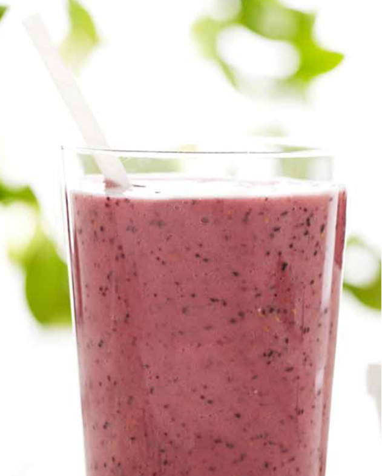

Morning Smoothie

Morning Berry Smoothie with Protein
Looking for a quick breakfast option with low prep time? Then the Morning Berry Smoothie with Protein
is a great option. Delicious, light, and refreshing, the Morning Berry Smoothie with Protein will
have you ready to take on the day.
The Morning Berry Smoothie with Protein is easy to make with a great blend of strawberries, blueberries,
bananas, greek yogurt, milk, and a scoop of protein powder.
Ingredients
- 2 cups of strawberries
- 1 banana (sliced)
- 1/2 cup of blueberries
- 1 cup of low-fat greek yogurt
- 1 cup of reduced fat milk
- 1 scoop of protein powder (
Protein Power of Choice)
Steps
- Thinly Slice 1 banana.
- Add banana to blender.
- Add 2 cups of strawberries to blender.
- Add 1/2 cup of blueberries to blender.
- Add 1 cup of low-fat greek yogurt to blender.
- Add 1 scoop of protein powder to blender.
- Add 1 cup of reduced fat milk to blender.
- Blend ingredients in blender until desired consistency is reached.
- If smoothie is too thick, add 1 additional cup of reduced fat milk to blender
and blend until mixed. Repeat this step until desired consistency is achieved.